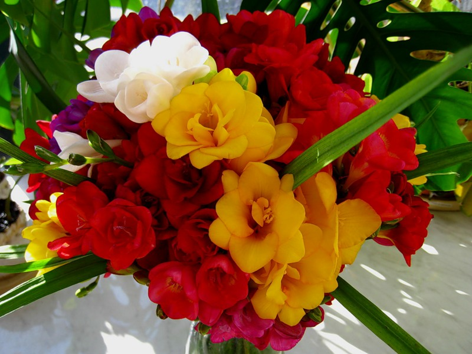
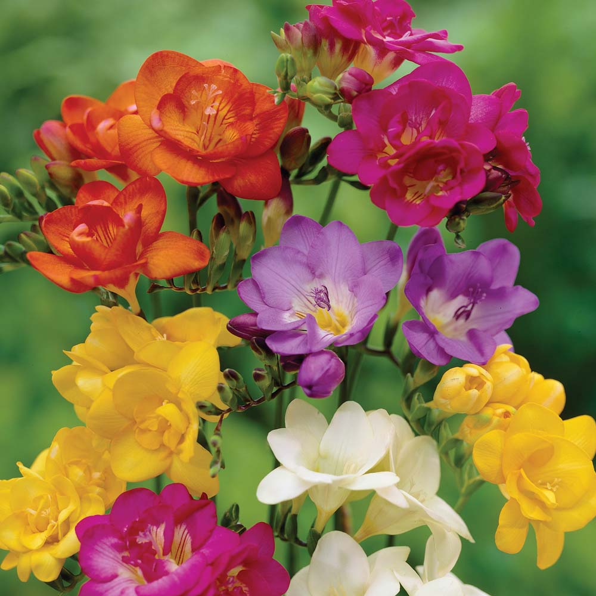
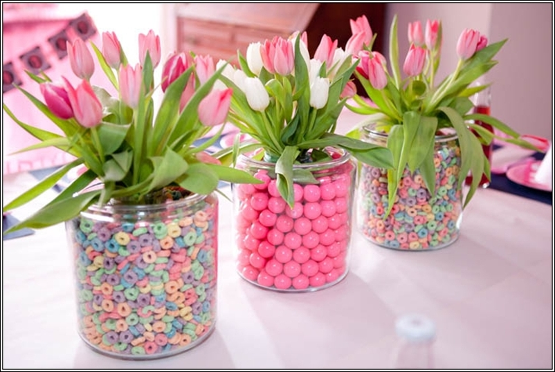
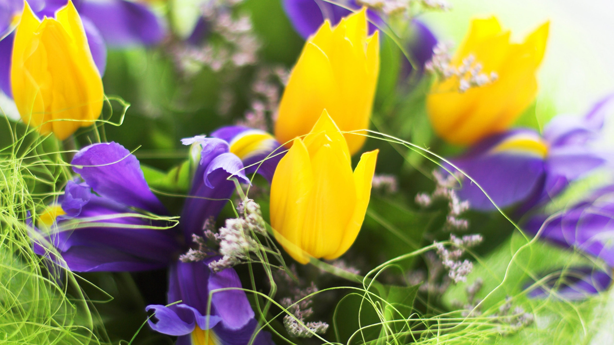

Статьи о цветах и букетах
Свадебные украшения для прически невесты из живых цветов
Для создания идеального образа невесты требуется не только шикарное платье, безупречный макияж и стильный букет.
Очень важным элементом образа являются аксессуары. Выбор современных украшений для невест очень разнообразен, но настоящей изюминкой, придающий невесте нежность и романтичность, хрупкость и сказочность станут живые цветы.
Виды фрезии
Фрезия – роскошное цветочное растение, чувственное и нежное, идеально подходящее для букетов и композиций, а также для выращивания в домашних условиях и в саду в открытом грунте.
Именно эти качества делают фрезию такой популярной среди покупателей и ведущей культурой для среза у цветоводов.
Яркий, и в то же время хрупкий и романтичный цветок пришел к нам из Южной Африки и насчитывает более 20 видов. В естественной среде обитания встречается на берегах рек и озер.
Фрезия - выращивание и уход
Фрезия (лат. Freesia) – очень популярный цветок невероятной красоты, привезенный из Африки. В своей естественной среде он растет возле кустарников на берегах озер и рек.
Принадлежит растение к семейству Ирисовых, это многолетний травянистый луковичный цветок, обладающий нежным ароматом, напоминающий ландыши.
На настоящий момент насчитывается более 20 разновидностей фрезии. Она прекрасно подходит для создания нежнейших букетов и самых красивых композиций.
Цветы в горшках в подарок к 8 марта
Дарить цветы на праздник в горшках пришла к нам с Запада и успешно прижилась, так как такой презент во-первых – неординарный, во-вторых – он может послужить приятным дополнением к интерьеру, и в-третьих – он радует глаз гораздо дольше срезанных цветов.
Так же, как и со срезанными цветами, хорошим тоном считается дарить горшечные растения с полураспустившимися бутонами.
Какие цветы дарят на 8 марта
8 марта – рекордный день по количеству подаренных букетов цветов прекрасной половине человечества. Современные цветочные салоны предлагают большой выбор самых разных цветов, на любой вкус и в любой ценовой категории. Разнообразие цветочных композиций и букетов позволяет сделать любой подарок, от самого скромного до невероятно шикарного. Но все же самыми популярными остаются традиционные весенние цветы.